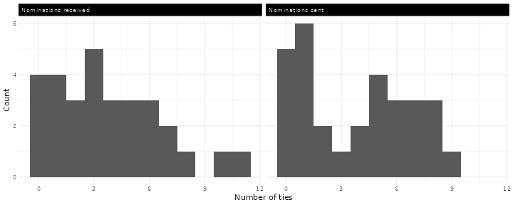
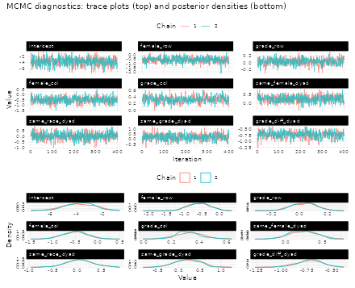
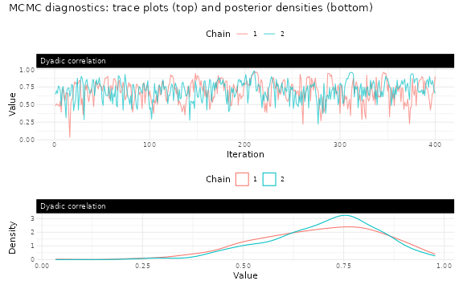
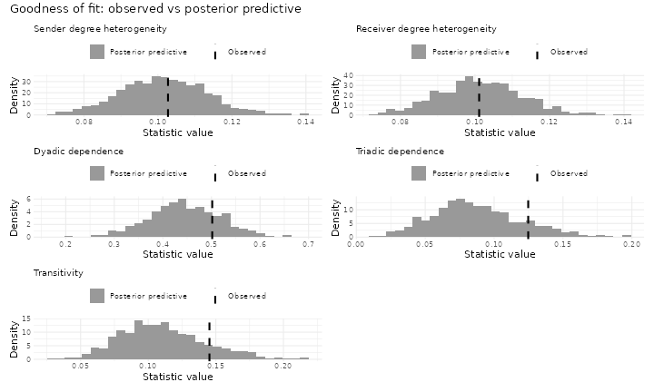
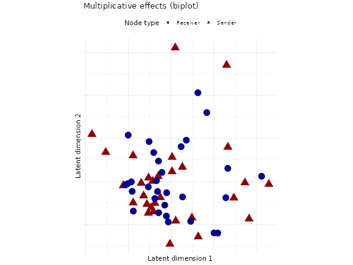
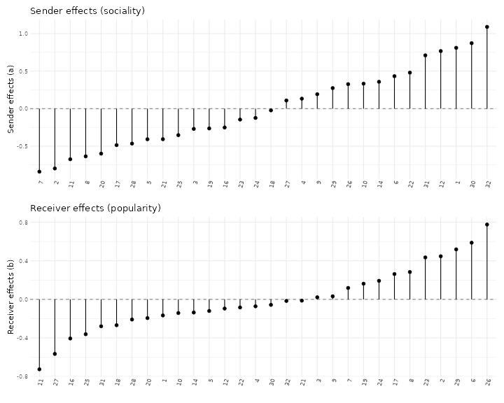
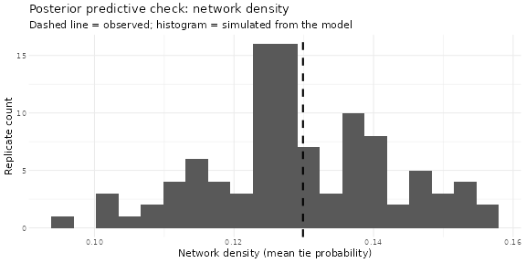

Your First AME Model
Cassy Dorff, Shahryar Minhas, and Tosin Salau
2026-11-22
Source:vignettes/cross_sec_ame.Rmd
cross_sec_ame.RmdWhy Network Models?
Imagine you’re studying friendships in a high school. You have data on who nominated whom as a friend, plus information about each student (gender, race, grade). A natural first instinct is to run a logistic regression: does sharing the same gender predict friendship?
The problem is that friendships aren’t independent observations. Some students are more social (they nominate lots of friends), some are more popular (they receive lots of nominations), and friendships tend to be reciprocated: if Alice names Bob, Bob is more likely to name Alice. A standard regression ignores all of this, and your standard errors will be wrong.
The Additive and Multiplicative Effects (AME) model handles these dependencies directly. It gives each actor a sender effect (, how social they are), a receiver effect (, how popular they are), and a position in a latent space (, ) that captures who tends to connect with whom beyond what the covariates explain. The additive effects enter as ; the latent positions enter multiplicatively as the dot product . Think of it as a regression that takes network structure seriously.
The Data
We’ll analyze a friendship network from the Add Health study, a
longitudinal study of adolescents in the United States. The
addhealthc3 dataset in lame contains a
directed friendship nomination network along with student
characteristics.
library(lame)
library(ggplot2)
set.seed(6886)
# load the Add Health friendship network
data(addhealthc3)
# binary friendship: any nomination counts
Y <- (addhealthc3$Y > 0) * 1
X_nodes <- addhealthc3$X
# keep the students whose covariates are all recorded
has_covs <- complete.cases(X_nodes)
Y <- Y[has_covs, has_covs]
X_nodes <- X_nodes[has_covs, ]
n <- nrow(Y)
cat("Students:", n, "\n")
#> Students: 30
cat("Friendships:", sum(Y, na.rm = TRUE), "\n")
#> Friendships: 113
cat("Network density:", round(mean(Y, na.rm = TRUE), 3), "\n")
#> Network density: 0.13Notice the na.rm = TRUE calls: the diagonal is
NA because self-ties are undefined. NAs stay
in the matrix and ame() treats those dyads as unobserved,
filling them in by data augmentation. A dyad with a missing covariate is
treated the same way. Two of the 32 students in the file have no
recorded race, so every dyad they belong to would be unobserved; the
analysis uses the other 30.
Before modeling: how much do students vary in their number of friends?
out_degree <- rowSums(Y, na.rm = TRUE)
in_degree <- colSums(Y, na.rm = TRUE)
degree_df <- data.frame(
Degree = c(out_degree, in_degree),
Type = rep(c("Nominations sent", "Nominations received"), each = n)
)
ggplot(degree_df, aes(x = Degree)) +
geom_histogram(binwidth = 1) +
facet_wrap(~Type, ncol = 2) +
labs(x = "Number of ties", y = "Count") +
theme_bw() +
theme(
panel.border = element_blank(),
axis.line = element_blank(),
axis.ticks = element_blank(),
legend.position = "top",
plot.title = element_text(hjust = 0),
plot.subtitle = element_text(hjust = 0),
plot.caption = element_text(hjust = 0),
strip.background = element_rect(fill = "black", color = "black"),
strip.text = element_text(color = "white", hjust = 0)
)
Some students are much more social than others, and some much more popular – exactly what the sender and receiver random effects will capture.
Building Covariates
The classic question in friendship networks is homophily: do birds of a feather flock together? We’ll test whether students are more likely to be friends with others of the same gender, race, and grade.
We include both same_grade (binary) and
grade_diff (continuous: grades apart). They measure nearly
the same thing, and the results below show how the model divides the
grade signal between two overlapping covariates.
# outer() compares every pair of students: 1 if they share the attribute, 0 if not
same_female <- outer(X_nodes[, "female"], X_nodes[, "female"], "==") * 1
same_race <- outer(X_nodes[, "race"], X_nodes[, "race"], "==") * 1
same_grade <- outer(X_nodes[, "grade"], X_nodes[, "grade"], "==") * 1
# absolute grade difference, a continuous covariate
grade_diff <- abs(outer(X_nodes[, "grade"], X_nodes[, "grade"], "-"))
# stack into an n x n x p array
Xdyad <- array(NA, dim = c(n, n, 4))
Xdyad[, , 1] <- same_female
Xdyad[, , 2] <- same_race
Xdyad[, , 3] <- same_grade
Xdyad[, , 4] <- grade_diff
dimnames(Xdyad)[[3]] <- c('same_female', 'same_race', 'same_grade', 'grade_diff')
for (k in 1:4) diag(Xdyad[, , k]) <- NA
# nodal covariates (sender and receiver characteristics)
Xrow <- X_nodes[, c("female", "grade")]
Xcol <- X_nodes[, c("female", "grade")]Fitting the Model
Now the fun part. We fit a binary probit AME model with:
- Covariates for homophily effects
- Sender and receiver random effects (sociality / popularity)
- Dyadic correlation (reciprocity)
- 2-dimensional latent space (residual clustering)
A note for ERGM users: what AME assumes
If you’re coming from ergm / statnet, the key difference
is the dependence assumption. ERGM uses change statistics
(e.g. gwesp, triangle, kstar) to
encode unconditional higher-order dependence: changing one tie
shifts the probability of other ties directly. AME instead assumes
conditional dyadic independence: given the additive
effects
,
the latent positions
,
the dyadic correlation
,
and the covariates, all dyads are independent, and higher-order
structure is captured indirectly by integrating over the latent
effects.
Three practical consequences:
-
No degeneracy. AME avoids the model-degeneracy
failure modes of ERGMs with
triangleor unconstrainedkstarterms. -
No change-statistic interpretation of
.
A coefficient on
same_gradeis a partial association on the probit-latent scale, not a log-odds change conditional on the rest of the network. - Check the dependence summaries you need. Joint posterior predictive checks assess whether the chosen rank and covariates reproduce the observed clustering and other network summaries.
fit <- ame(
Y,
Xdyad = Xdyad,
Xrow = Xrow,
Xcol = Xcol,
R = 2, # 2D latent space
family = "binary", # probit model for 0/1 data
rvar = TRUE, # sender random effects
cvar = TRUE, # receiver random effects
dcor = TRUE, # dyadic correlation (reciprocity)
verbose = FALSE,
posterior_opts = posterior_options(
save_ab = TRUE, save_UV = TRUE,
thin_ab = 1, thin_UV = 1
),
gof = TRUE
)What Did We Find?
summary(fit)
#>
#> ── AME model summary ───────────────────────────────────────────────────────────
#>
#> ── Call
#> Y ~ intercept + dyad(same_female, same_race, same_grade, grade_diff) + row(female, grade) + col(female, grade) + a[i] + b[j] + rho*e[ji] + U[i,1:2] %*% V[j,1:2], family = 'binary'
#>
#> ── Regression coefficients
#> Estimate StdError z_value p_value CI_lower CI_upper Rhat
#> intercept -4.303 1.575 -2.732 0.006 -7.5 -1.213 1.002
#> female_row -0.64 0.4 -1.599 0.11 -1.427 0.115 1
#> grade_row 0.053 0.121 0.433 0.665 -0.199 0.286 1
#> female_col -0.603 0.354 -1.703 0.089 -1.339 0.06 1.002
#> grade_col 0.356 0.117 3.036 0.002 0.134 0.6 1.001
#> same_female_dyad 0.268 0.201 1.331 0.183 -0.116 0.668 1.005
#> same_race_dyad 0.02 0.351 0.056 0.955 -0.666 0.695 1.001
#> same_grade_dyad 0.205 0.333 0.618 0.537 -0.482 0.859 1
#> grade_diff_dyad -0.797 0.146 -5.456 0 -1.089 -0.532 1
#> Threshold ESS
#> intercept 1.05 1301.498 **
#> female_row 1.05 1440
#> grade_row 1.05 1170.841
#> female_col 1.05 1440 .
#> grade_col 1.05 564.044 **
#> same_female_dyad 1.05 1440
#> same_race_dyad 1.05 1031.205
#> same_grade_dyad 1.05 1083.93
#> grade_diff_dyad 1.05 654.323 ***
#> ---
#> Signif. codes: 0 '***' 0.001 '**' 0.01 '*' 0.05 '.' 0.1 ' ' 1
#> ℹ Stars are a visual hint from the posterior mean / SD only; for inference use
#> the credible intervals.
#>
#> ── Variance components
#> Estimate StdError Rhat Threshold ESS
#> va 0.905 0.374 1.000 1.05 1165.495
#> cab 0.068 0.196 1.002 1.05 1241.495
#> vb 0.562 0.225 1.000 1.05 1440.000
#> rho 0.702 0.153 1.004 1.05 355.177
#> va = sender variance, cab = sender-receiver covariance, vb = receiver
#> variance, rho = dyadic correlation
#> • Latent dimensions: 98%, 2% of the latent product
#> ℹ Threshold is the R-hat the between-chain gate held each monitored quantity
#> to: 1.05, or the R-hat that settled chains with the same effective draws
#> reach by chance, if larger.
#> ✔ The chains agree on every monitored quantity (R-hat at most its threshold, with enough effective draws to compare).Let’s unpack the key results:
Homophily effects. The grade_diff
coefficient is strongly negative and its credible interval excludes
zero: students further apart in grade are much less likely to be
friends. The same_female coefficient is positive (gender
homophily) but its 95% credible interval includes zero: the data do not
separate the effect from zero. The same_race coefficient
captures race homophily after controlling for grade and gender.
Overlapping covariates. same_grade and
grade_diff measure nearly the same thing – a grade
difference of 0 is the same-grade event. The model puts the
grade signal on grade_diff: its posterior mean is -0.8 with
a 95% interval of [-1.09, -0.53]. same_grade is left with
the residual bump at zero distance on top of that linear trend, 0.21
with an interval of [-0.48, 0.86]. To read the grade effect off a single
coefficient, include one of the two.
Variance components. The sender variance
(va) and receiver variance (vb) quantify how
much students differ in sociality and popularity. The dyadic correlation
(rho) captures reciprocity: values near 1 mean that if A
nominates B, B almost always nominates A back. Reciprocity is strong
here.
For binary networks with a probit link, the coefficients are on the
latent scale, and the textbook
“”
rule for converting them to probability changes is only sharp when the
baseline probability is near 0.5 – which this sparse network is not.
Compute the quantity you want directly:
predict(fit, type = "response") returns tie probabilities,
and contrasting them under counterfactual covariate settings gives the
probability change.
Did the Sampler Converge?
The model is estimated via MCMC (Markov chain Monte Carlo), so trace plots are the first check that the sampler explored the posterior thoroughly.
trace_plot(fit, params = "beta", ncol = 3)
ame() also checks convergence itself. It runs two
independently seeded chains by default (chains = 2; the
seeds are seed and seed + 1000) and, before
returning, checks the intercept, va, vb,
ve and rho of each chain for drift and
compares the two chains on the coefficients, the variance components and
summaries of the additive and latent effects. A quantity passes when its
split rank-normalised
is at most its threshold (1.05, or the larger value settled chains reach
by chance when many quantities are compared on a short run) and the
chains hold enough effective draws on it to have caught a disagreement
of one posterior standard deviation. Chains that have not settled are
continued together, up to three times, and a fit is returned only when
no chain drifts and no
is above its threshold. fit$rhat lists each
with its threshold and verdict, and summary(fit) prints
them in its Rhat and Threshold columns.
The call above uses the default run length
(burn = 500, nscan = 10000, odens = 25). It returned 1440
draws from 2 chains, and every
in the summary is below its threshold. rho has the smallest
effective sample size of the stored parameters in this fit, so its trace
is the one to look at next:
trace_plot(fit, params = "variance", include = "Dyadic correlation")
What to look for: Traces should fluctuate around a stable mean (long trends mean non-convergence) and densities should be smooth and unimodal.
Numerical convergence diagnostics:
posterior::as_draws()
The numerical counterpart of a trace plot is the summary triple
split-,
bulk ESS, and tail ESS.
lame registers an as_draws() method, so the
same posterior-package workflow you would run on a
stanfit works here:
library(posterior)
draws <- posterior::as_draws(fit) # draws_array [iter, chain, var]
# mean, sd, quantiles, rhat and ESS for each parameter
draw_summary <- posterior::summarise_draws(draws)
draw_summary
#> # A tibble: 14 × 10
#> variable mean median sd mad q5 q95 rhat ess_bulk ess_tail
#> <chr> <dbl> <dbl> <dbl> <dbl> <dbl> <dbl> <dbl> <dbl> <dbl>
#> 1 interce… -4.30 -4.30 1.57 1.47 -7.02 -1.74 1.00 1309. 1425.
#> 2 female_… -0.640 -0.644 0.400 0.389 -1.31 -0.0148 1.000 1473. 1329.
#> 3 grade_r… 0.0525 0.0522 0.121 0.119 -0.152 0.255 1.000 1084. 1261.
#> 4 female_… -0.603 -0.577 0.354 0.344 -1.20 -0.0407 1.00 1354. 1334.
#> 5 grade_c… 0.356 0.354 0.117 0.116 0.172 0.564 1.00 583. 1142.
#> 6 same_fe… 0.268 0.273 0.201 0.202 -0.0651 0.603 1.01 1383. 1283.
#> 7 same_ra… 0.0196 0.0205 0.351 0.354 -0.552 0.597 1.00 963. 1026.
#> 8 same_gr… 0.205 0.202 0.333 0.327 -0.346 0.757 1.000 1025. 1188.
#> 9 grade_d… -0.797 -0.789 0.146 0.152 -1.04 -0.574 1.000 562. 1030.
#> 10 va 0.905 0.823 0.374 0.300 0.459 1.67 1.000 1121. 1337.
#> 11 cab 0.0684 0.0596 0.196 0.177 -0.227 0.390 1.00 1168. 1315.
#> 12 vb 0.562 0.518 0.225 0.188 0.290 0.963 1.000 1244. 1342.
#> 13 rho 0.702 0.724 0.153 0.151 0.422 0.910 1.00 333. 326.
#> 14 ve 1 1 0 0 1 1 NA NA NAThe table has one row per stored parameter, from 1440 draws. The
largest
split-
is 1.005, bulk ESS runs from 333 to 1473 and tail ESS from 326 to 1425.
ve is the latent residual variance, fixed at 1 for probit
identification, so its draws are constant and its row shows
NA for
and ESS.
More chains: chains = 4
For a stricter comparison, run more chains from different seeds;
ame() checks them the same way and
summarise_draws() computes
across them:
# four chains from different seeds
fit_mc <- ame(
Y,
Xdyad = Xdyad,
Xrow = Xrow,
Xcol = Xcol,
family = "binary",
R = 2,
chains = 4,
cores = 4, # forked on Unix; sequential on Windows
verbose = FALSE
)
posterior::summarise_draws(posterior::as_draws(fit_mc))Read the resulting
split-,
bulk ESS, and tail ESS together; the usual targets are
below 1.01 and an ESS of at least 400. On these data the four chains
agree to a largest
of 1.00 and every parameter has more than 900 effective draws.
chains = 1 runs one chain, with the drift check only.
The pooled object carries a chain_indicator so
as_draws() keeps chain identity separate; the same reshape
feeds bayesplot::mcmc_trace() and
tidybayes::tidy_draws() directly.
Other quick checks
fit$mh_counters counts, for each block of the sampler,
the updates that kept their previous state; zeros mean every update went
through. prior_summary(fit) prints the hyperparameters
actually used, including the defaults.
str(fit$mh_counters)
#> List of 6
#> $ beta : num 0
#> $ Sab : num 0
#> $ s2 : num 0
#> $ rho : num 0
#> $ UV : num 0
#> $ rho_collapsed: num 0
prior_summary(fit)
#>
#> ── Recorded prior settings (ame fit) ──
#>
#> Regression coefficients have a zero-mean design-based Gaussian g-prior,
#> independent of residual s2, with a proportional numerical ridge and additional
#> intercept variance; see rbeta_ab_fc().
#> `g` (top-level argument) = 870
#> Note: `g` is set at top level on `ame()` -- not inside `prior = list(...)`.
#> `Suv0` = "matrix(c(0.2172, 0, 0, 0, 0, 0.2172, 0, 0, 0, 0, 0.2172, 0, 0, 0, 0,
#> 0.2172), 4, 4)"
#> `kappa0` = "13"Model comparison: loo() and
loo_compare()
If you refit with save_log_lik = TRUE, the fit carries a
[n_stored, n_obs] matrix of pointwise log-likelihoods and
loo::loo(fit) works through the registered S3 method.
PSIS-LOO leaves out one cell at a time, which matches a model with
independent residuals, so the two candidates are fitted with
dcor = FALSE.:
# additive model with the dyadic covariates
fit_ll <- ame(
Y,
Xdyad = Xdyad,
Xrow = Xrow,
Xcol = Xcol,
family = "binary",
R = 0,
dcor = FALSE,
save_log_lik = TRUE,
verbose = FALSE
)
# the same model without them
fit_ll_null <- ame(
Y,
Xrow = Xrow,
Xcol = Xcol,
family = "binary",
R = 0,
dcor = FALSE,
save_log_lik = TRUE,
verbose = FALSE
)
loo_dyad <- loo::loo(fit_ll)
loo_null <- loo::loo(fit_ll_null)
loo_dyad # elpd_loo and the Pareto k table
loo::loo_compare(list(with_dyad = loo_dyad, no_dyad = loo_null))The dyadic covariates raise the expected log predictive density by
about 65, with a standard error near 12. The
Pareto-
table counts the dyads the leave-one-out approximation handles well: 862
of the 870 for the model with the dyadic covariates and 866 for the one
without, and loo() flags the rest. A run four times as long
returns the same estimates with one dyad flagged in each model. To
choose the latent dimension R on a single network of this
size, score dyads the fit never saw, as in Comparing R on
held-out ties; there R = 2 is ahead of
R = 0 on every fold.
loo() and waic() score normal, binary,
Poisson and explicit-cutpoint ordinal
(ordinal_cutpoints = "explicit") fits with
dcor = FALSE; symmetric fits count each unordered dyad
once. See ?loo.ame.
Does the Model Fit the Data?
Goodness-of-fit (GOF) checks whether the model can reproduce structural features of the observed network – degree heterogeneity, reciprocity, clustering – beyond dyad-level prediction.
gof_plot(fit)
In each panel the grey histogram is the posterior-predictive
distribution from networks simulated out of the fitted model, and the
dashed black vertical line is the observed value. See
?gof_plot for the statistics = ... aliases and
the exact column names stored in fit$GOF.
The observed values for sender and receiver degree heterogeneity and
for dyadic dependence (essentially empirical reciprocity) fall inside
their posterior-predictive histograms: the random effects, the variance
components, and
model those three features directly. Triangle closure has no term of its
own in an AME model; the latent positions reproduce it through
clustering of the
and
.
Here the share of simulated networks at or above the observed value is
0.15 for triadic dependence and 0.17 for transitivity, so both observed
values lie inside the central 95 percent of the simulated ones.
Comparing these two panels across values of R shows how
much closure each added latent dimension accounts for; when triangle
closure is itself the estimand, an ERGM closure term models it
directly.
You can also compute GOF after the fact using the gof()
function, which accepts custom statistics. The built-in
trans.dep panel is a correlation-style clustering
measure; ERGM users will typically want the raw clustering coefficient
(sna::gtrans, the scalar summary that
gwesp(decay = 0, fixed = TRUE) targets), which takes a few
lines as a custom stat:
# clustering coefficient: transitive triples over two-paths
trans_ratio <- function(Y) {
Yb <- Y; Yb[is.na(Yb)] <- 0 # missing ties count as 0
YY <- Yb %*% Yb
triangles <- sum(YY * Yb) # transitive triples
two_path <- sum(YY) - sum(diag(YY)) # two-paths (potential triangles)
c(trans_ratio = triangles / max(two_path, 1))
}
gof_custom <- gof(fit, custom_gof = trans_ratio, nsim = 50, verbose = FALSE)
obs <- gof_custom[1, "trans_ratio"]
sim <- gof_custom[-1, "trans_ratio"]
# posterior predictive p-value (right tail): near 0 means under-predicted
c(
observed = round(obs, 3),
sim_mean = round(mean(sim), 3),
pp_p_right = round(mean(sim >= obs), 3)
)
#> observed sim_mean pp_p_right
#> 0.485 0.449 0.260Read this the way you would read ergm::gof():
pp_p_right is the fraction of simulated networks at or
above the observed value, so a value near 0 means the model
under-predicts the statistic. Here it is 0.26 across 50 joint posterior
replicates. These replicates retain uncertainty in the actor effects and
latent positions as well as the regression coefficients. See
?gof for adding further custom statistics (raw triangle
counts, degree assortativity, and so on).
Visualizing the Latent Space
The multiplicative effects () place each student in a 2D latent space: students near each other in sender space (triangles) nominate similar friends, and students near each other in receiver space (circles) are nominated by similar students. Clusters likely share some unobserved characteristic (same social group, same extracurriculars) that drives friendship choices beyond gender, race, and grade.
uv_plot(fit, layout = "biplot", show.edges = FALSE, label.nodes = FALSE)
Who Are the Most Social / Popular Students?
The additive effects decompose individual heterogeneity into sender effects (sociality) and receiver effects (popularity):
p1 <- ab_plot(
fit,
effect = "sender",
sorted = TRUE,
title = "Sender effects (sociality)"
)
p2 <- ab_plot(
fit,
effect = "receiver",
sorted = TRUE,
title = "Receiver effects (popularity)"
)
library(patchwork)
p1 / p2
Students with large positive sender effects nominate more friends than expected given their covariates; those with large positive receiver effects receive more nominations.
Making Predictions
The model gives you predicted probabilities for every possible tie, useful for link prediction and for understanding dyad-level fit. For sparse networks, predicting “no tie” for every dyad already gets most predictions right, so raw accuracy flatters the model – judge it against the modal-class baseline.
pred_resp <- predict(fit, type = "response")
# observed and predicted ties as vectors
Y_vec <- as.vector(Y)
pred_vec <- as.vector(pred_resp)
keep <- !is.na(Y_vec)
# classification at a 0.5 threshold
pred_binary <- (pred_vec[keep] > 0.5) * 1
confusion <- table(Actual = Y_vec[keep], Predicted = pred_binary)
knitr::kable(confusion, caption = "Confusion matrix (threshold = 0.5)")| 0 | 1 | |
|---|---|---|
| 0 | 749 | 8 |
| 1 | 48 | 65 |
accuracy <- sum(diag(confusion)) / sum(confusion)
baseline <- max(mean(Y_vec[keep]), 1 - mean(Y_vec[keep])) # accuracy of always predicting the modal class
cat(
"\nAccuracy:",
round(accuracy, 3),
" | Baseline (predict modal class):",
round(baseline, 3),
" | Lift:",
round(accuracy - baseline, 3),
"\n"
)
#>
#> Accuracy: 0.936 | Baseline (predict modal class): 0.87 | Lift: 0.066The model classifies 93.6% of dyads correctly, against 87% for always predicting “no tie”.
For link prediction, AUC-style metrics evaluate the model’s ability to rank true ties above non-ties across all thresholds. For sparse networks PR-AUC is the more informative summary: a model that always predicts “no tie” already has AUROC near 0.5 but PR-AUC near the network density, so the gap between PR-AUC and density is the metric of substantive interest.
# AUROC with pROC
roc_obj <- pROC::roc(
response = Y_vec[keep],
predictor = pred_vec[keep],
quiet = TRUE
)
auroc <- as.numeric(pROC::auc(roc_obj))
# ROC and precision-recall AUCs with precrec; PR-AUC suits rare ties
ev <- precrec::evalmod(scores = pred_vec[keep], labels = Y_vec[keep])
precrec::auc(ev) # AUROC and PR-AUC side by side
#> modnames dsids curvetypes aucs baselines
#> 1 m1 1 ROC 0.9794251 0.5000000
#> 2 m1 1 PRC 0.8858958 0.1298851
cat(
"AUROC:",
round(auroc, 3),
"\n",
"Baseline AUROC (random ranker):",
0.5,
"\n",
"Baseline PR-AUC (density of Y):",
round(mean(Y_vec[keep]), 3),
"\n"
)
#> AUROC: 0.979
#> Baseline AUROC (random ranker): 0.5
#> Baseline PR-AUC (density of Y): 0.13Here PR-AUC is 0.886 against a density baseline of 0.13, and AUROC is 0.979 against 0.5 for a random ranker. These are in-sample ranking summaries; the next section scores dyads the model never saw.
Held-out link prediction
For a held-out evaluation, mask a random subset of dyads to
NA before fitting (the sampler excludes them from the
likelihood via data augmentation), then score
predict(fit, type = "response") on the masked indices.
Stratify the split on Y so the test set contains both
classes.
# 80/20 stratified mask of off-diagonal dyads
set.seed(6886)
off_diag <- which(row(Y) != col(Y) & !is.na(Y))
pos_idx <- off_diag[Y[off_diag] == 1]
neg_idx <- off_diag[Y[off_diag] == 0]
test_idx <- c(
sample(pos_idx, round(0.2 * length(pos_idx))),
sample(neg_idx, round(0.2 * length(neg_idx)))
)
Y_train <- Y
Y_train[test_idx] <- NA # mask test dyads from the likelihood
fit_train <- ame(
Y_train,
Xdyad = Xdyad,
Xrow = Xrow,
Xcol = Xcol,
R = 2,
family = "binary",
rvar = TRUE,
cvar = TRUE,
dcor = TRUE,
verbose = FALSE,
gof = FALSE
)
pred_train <- predict(fit_train, type = "response")
# evaluate_heldout() scores the predictions on a logical test mask
test_mask <- matrix(
FALSE,
nrow(Y),
ncol(Y),
dimnames = dimnames(Y)
)
test_mask[test_idx] <- TRUE
heldout_metrics <- evaluate_heldout(
y_obs = Y,
y_pred = pred_train,
mask = test_mask,
family = "binary"
)
heldout_metrics
#> n_eval auroc auprc brier logloss
#> 1 174 0.9231212 0.6893068 0.06925327 0.2208384
cat(
"Test dyads:",
length(test_idx),
" | positives:",
sum(Y[test_idx] == 1),
"\n"
)
#> Test dyads: 174 | positives: 23On the 174 evaluated held-out dyads (23 true friendships), AUROC is
0.923 and PR-AUC is 0.689. The random-ranking references are 0.5 and the
test-set density 0.132, and the in-sample values were 0.979 and 0.886:
the model ranks friendships it never saw well above chance. Report the
evaluated count and positive count alongside the scores; see
?evaluate_heldout for definitions and options.
Do the latent positions help? Comparing R on held-out
ties
The same masking answers the question most users bring to an AME model: do the multiplicative effects predict ties that the covariates and the sender and receiver effects do not? Mask each fifth of the dyads in turn, fit the model with and without latent positions, and score the masked dyads:
# five stratified folds over the dyads, the same for both models
set.seed(6886)
scored <- which(row(Y) != col(Y))
fold <- integer(length(Y))
for (v in 0:1) {
idx <- scored[Y[scored] == v]
fold[idx] <- sample(rep(1:5, length.out = length(idx)))
}
# fit one model with a fold masked, then score that fold
score_fold <- function(k, R) {
Y_k <- Y
Y_k[fold == k] <- NA
fit_k <- ame(
Y_k,
Xdyad = Xdyad,
Xrow = Xrow,
Xcol = Xcol,
R = R,
family = "binary",
gof = FALSE,
verbose = FALSE
)
m <- evaluate_heldout(
y_obs = Y,
y_pred = predict(fit_k, type = "response"),
mask = matrix(fold == k, nrow(Y), dimnames = dimnames(Y)),
family = "binary"
)
data.frame(R = R, fold = k, m[c("n_eval", "auroc", "auprc", "logloss")])
}
cv <- do.call(rbind, lapply(c(0, 2), function(R) {
do.call(rbind, lapply(1:5, score_fold, R = R))
}))
# mean ranking metrics over the folds, and the log score summed over the held-out dyads
cv$log_score <- -cv$logloss * cv$n_eval
aggregate(cbind(auroc, auprc) ~ R, data = cv, FUN = mean)
aggregate(log_score ~ R, data = cv, FUN = sum)The latent positions are ahead on every one of the five folds.
Averaged over the folds, AUROC rises from 0.87 with R = 0
to 0.89 with R = 2 and PR-AUC from 0.55 to 0.60. The log
score summed over the 870 held-out dyads rises from -234.2 to -219.0.
All ten fits run at the default length.
Simulating from the Model
You can generate new networks from the fitted posterior. A posterior predictive check asks: does a network simulated from posterior draws look like the observed one on a feature you care about (here, overall density)? Observed values inside the simulated distribution mean the model reproduces that feature; values in a tail mean it is missing something.
sims <- simulate(fit, nsim = 100)
# simulated and observed densities
sim_densities <- sapply(sims$Y, function(y) mean(y, na.rm = TRUE))
obs_density <- mean(Y, na.rm = TRUE)
ggplot(data.frame(density = sim_densities), aes(x = density)) +
geom_histogram(bins = 20) +
geom_vline(
xintercept = obs_density,
linewidth = 1,
linetype = "dashed"
) +
labs(
title = "Posterior predictive check: network density",
subtitle = "Dashed line = observed; histogram = simulated from the model",
x = "Network density (mean tie probability)", y = "Replicate count"
) +
theme_bw() +
theme(
panel.border = element_blank(),
axis.line = element_blank(),
axis.ticks = element_blank(),
legend.position = "top",
plot.title = element_text(hjust = 0),
plot.subtitle = element_text(hjust = 0),
plot.caption = element_text(hjust = 0)
)
Practical Tips
Choosing R (latent dimensions). Start with R = 0 (no
latent space), then try R = 1 and R = 2 and compare GOF and held-out prediction;
R = 2 or R = 3 suits most networks. Any rank
below the network size is fitted, so choose R by comparing
fit.
MCMC settings. The defaults
(burn = 500, nscan = 10000, odens = 25) are the length of a
final run: 400 stored draws from each of two chains, checked against
each other and continued automatically if they have not settled. For
exploratory work,
burn = 500, nscan = 2000, odens = 25, chains = 1 runs one
chain of 80 stored draws with the drift check. Read convergence from
fit$rhat and trace_plot().
Variance components. Include
rvar = TRUE and cvar = TRUE unless you have a
specific reason not to. Include dcor = TRUE for directed
networks where reciprocity is plausible.
What’s Next?
- Multiple time periods? See the lame overview for longitudinal models
- Two types of nodes? See the bipartite vignette
- Evolving network structure? See the dynamic effects vignette
-
Other data types? See
?amefor the supportedfamilyoptions